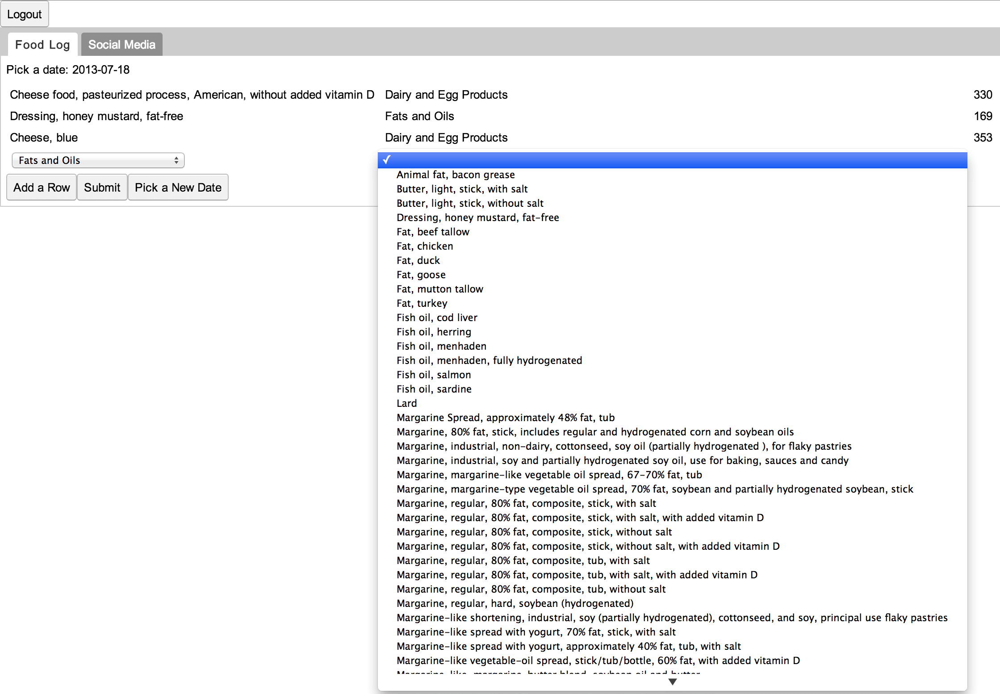
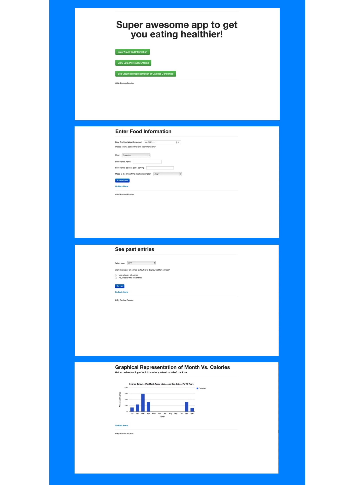

The Healthy Eating application is a dynamic web application that users can utilize to keep track of the amount of calorie that they are consuming. This task is made more interesting by the fact that this application interacts with Facebook to link the user with all of their friends who also use the application for keeping track of calories. Furthermore, users can compete with their friends in order to determine who is superior in term of eating healthy.
To create the actual application Google Web Toolkit was used (GWT). Using this framework made it easier to implement design patterns and use Java and Eclipse to create the final product. Furthermore, the framework ensured the presence of cross browser compatibility and other non-functional ‘nice to have’ features.
The application had some notable technical complexity. It utilized:
A view of the food diary entry stage that was built can be seen below: 
In order to see if there was interest in the application's services a sample application that provided the very basic simplified features was created. Java Servlets, Java Server Pages and MySql were used. The pertinent screenshots are shown below:  A sample user group was asked to play around with the application and report back on if they found its features useful.
In conclusion, the final product was a fully functioning web application that integrated social media to increase user engagement.